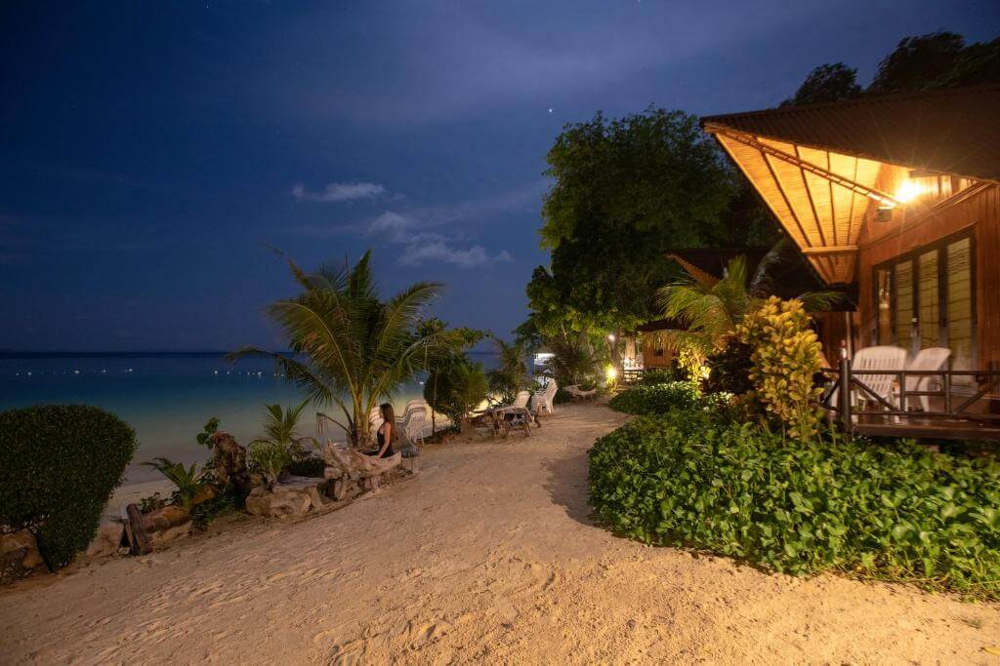
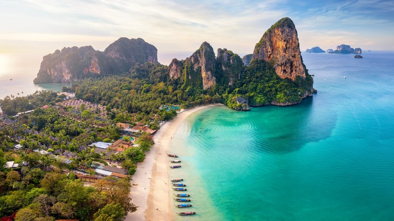

Day 1: Island Hopping & Beaches
- Morning: Phi Phi Islands or Hong Islands tour
- Lunch: Picnic or local seafood on the islands
- Afternoon: Relax at Ao Nang Beach (Krabi) or Patong Beach (Phuket)
- Evening: Sunset at Promthep Cape (Phuket) or Railay Beach viewpoint (Krabi)
Day 2: Adventure & Nature
- Morning: Kayaking through Phang Nga Bay caves or Thung Teao Forest Natural Park
- Lunch: Beachfront seafood restaurant
- Afternoon: Snorkeling or scuba diving (Koh Racha or Koh Hong)
- Evening: Night market in Phuket Old Town or Ao Nang Night Market

Day 3: Local Culture & Leisure
- Morning: Big Buddha Phuket or Tiger Cave Temple (Krabi)
- Lunch: Try local southern Thai cuisine (like Massaman curry)
- Afternoon: Relax at Kata or Karon Beach (Phuket) / Railay Beach (Krabi)
- Evening: Dinner at a rooftop bar with sea view, walk along the beach
